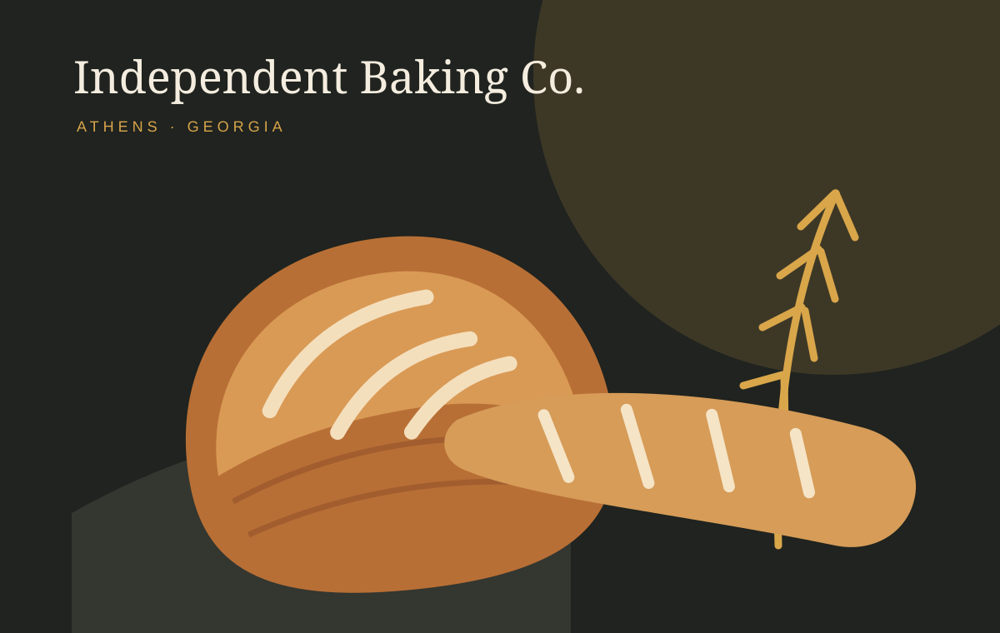

Core loaf
Five Points Levain
Naturally fermented bread and an everyday house staple.
Organic grain, milled with intention and given time. Naturally leavened bread and pastries, baked for our Athens neighbors.

Core loaves share the counter with rotating weekend favorites. Availability can change; call ahead for special orders and reservations, which require advance payment.
Naturally fermented bread and an everyday house staple.
A familiar daily bake, made with the bakery’s patient process.
A sweet morning companion for the first coffee of the day.
A weekend counter favorite; call if you need to reserve ahead.
Available Friday through Sunday while the day’s bake lasts.
Sourdough Rye and Sesame Semolina on Saturday; Cinnamon Buns on the weekend.
Independent Baking Co. uses organic grain and natural fermentation. Whole-grain flour is milled in-house or nearby—an intentionally short route from grain to loaf.
Organic grain is the foundation, including whole-grain flour milled close to the bake.
Time and culture develop flavor without rushing the process.
A small, local, independently owned bakery serving retail customers and wholesale partners.
Bread, pastry and coffee in Athens. For special orders or reservations, phone the bakery and arrange advance payment. Restaurants and coffee shops can ask about wholesale by email.
1625 S Lumpkin St
Athens, GA 30606
A loaf for the table—or a standing order for your kitchen.
706-850-3550
info@independentbaking.com
Reservations and special orders by phone. Wholesale enquiries by email.